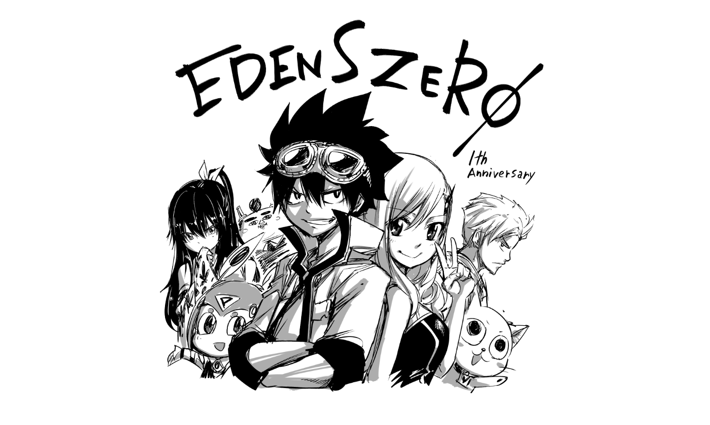
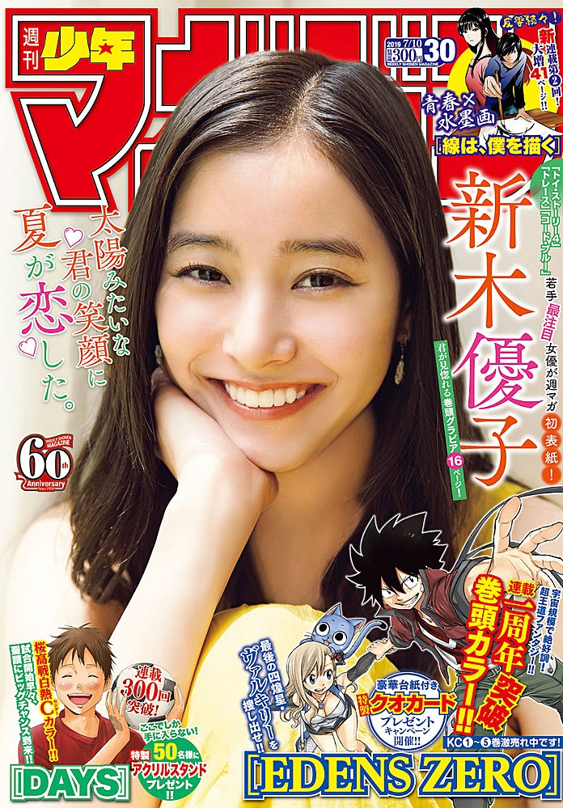
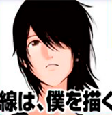
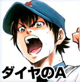
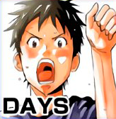
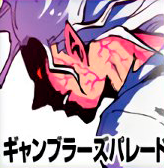

This week's Weekly Shonen Magazine posting order & comments from the author.

Sen wa boku wo Egaku

Newly bought nail clippers are really stern when you use them. (Horiuchi).
Diamond no Ace act II

I would like to see the 2020 Tokyo Semifinals at Tokyo Dome.
Domestic Girlfriend

The other day, I went to see the radio broadcast of the poisonous three daughters. Mamu-chan was really shy.
Seitokai Yakuindomo

I began working on the next volume.
The Seven Deadly Sins

It seems that opinions for the new 'Seven Deadly Sins: Light & Dark Battles' smartphone game are wonderful. The game quality is really high. It looks amazing!
Shinanaide Azukawa-san
I impressed a certain person with my guitar but I haven't been able to practice playing it at all... I'm sorry.
Orient

I'm learning how to cook simmered food.
Days

I turned 39 years old the other day.
Kanojo, Okarishimasu

In the Abema Shogi Tournament, the 7th floor of Sasaki was destroyed by the king's hand at Tokyo Tower.
Runway de Waratte

We are already at the end of June in almost no time.
Go-Toubun no Hanayome

I caught a summer cold, so I'm repeating my routine of only working and sleeping.
Tokyo Revengers

Huh? Will we reach 13 volumes? Who knows what will happen after reaching 12 volumes.
Blue Lock

It's coming! In summer I usually go to the sea house or T house! Of course, you need to go with your swimsuit. It is located in the Kami-ikebukuro neighbourhood, in Toshima! (T-Shop).
Senryuu Girl

The anime adaptation was good. It was really fun.
Fire Force

The date for 'Borderlands 3' has been decided and I'm really excited! There's also a new 'The Legend of Zelda' game coming! And 'Elden Ring' seems really promising! I'm looking forward them all!
Hitman

Watanabe Shizue got really mad when I mentioned I'm writing in a cheap laptop.
Boarding School Juliet
I'm watching 'Zootopia' and I really want to live there.
Soredemo Ayumu wa Yosetekuru

I'm happy because it seems a nearby barbecue restaurant has launched recently.
Gamblers Parade

I really enjoyed Splatoon's HAIKARA NYUSU from the disc 'Tentakuruzu', also liked the skip function and the Final Boss Fight, and how those two characters kept together. And finally, thank you so much! (Nakayama).
Danshi Kokosei wo Yashinaitai

I want to go see 'Godzilla'.
Shichiha Gojuroku

During the whole serialization I have been thinking: 'This is the peak of my life', and it was a lot of fun. Thank you very much. See you soon! (Kudo).
Fumetsu no Anata e
I had a dream in which my gums were stabbed. It was scary.
Mako-san wa Shindemo Jiritsu Shinai

I like to draw swimwear but I still hate the hotness of summer.
Edens Zero
Hiro Mashima
Thanks to you all we were able to celebrate our first anniversary. We will still look forward to your support.